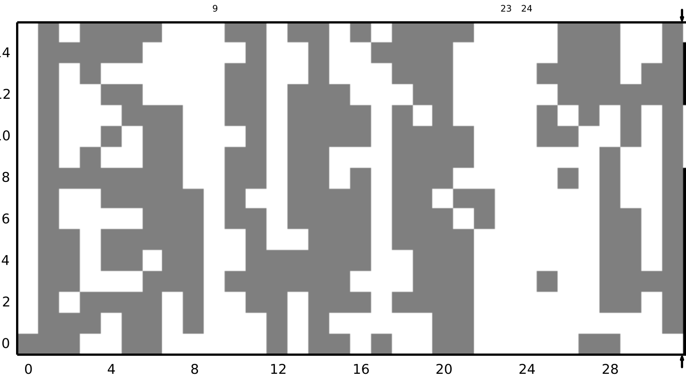
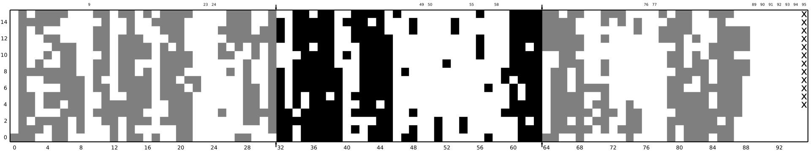
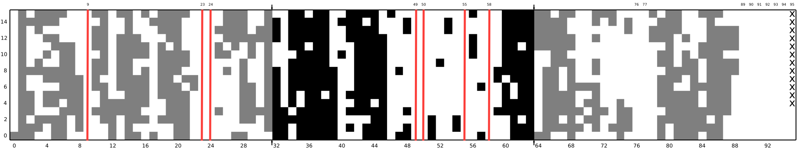
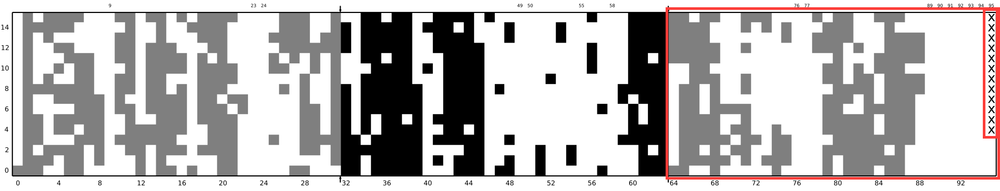

class: center, middle # On the Impact of Instruction Address Translation Overhead **Yufeng Zhou**¹, Xiaowan Dong², Alan L. Cox¹, Sandhya Dwarkadas² <div class="title-institution">¹Department of Computer Science, Rice University</div> <div class="title-email">{yufengz, alc}@rice.edu</div> <div class="title-institution">²Department of Computer Science, University of Rochester</div> <div class="title-email">{xdong, sandhya}@cs.rochester.edu</div> ??? I'm very excited to be here today to talk about the "title". --- # Instruction Address Translation  - Significant instruction address translation overhead. - PostgreSQL on a recent Intel Xeon processor: instruction address translation in progress during **14.9%** of execution cycles. - Intel documentation: worth investigating if >**5%**. ??? So, to begin with, on a virtual memory system, when the processor needs to fetch an instruction from memory, it begins with a virtual address. --- # Instruction Address Translation - Superpages Present Opportunities  - Translation lookaside buffer (TLB): caches virtual-to-physical translations for fast address translation. - Base pages: finer granularity, more translation information. - Superpages: coarser granularity, less translation information, potential memory bloat. ??? Depending on how large of a range of addresses the translation covers --- # Instruction Address Translation - Missed Opportunities - Operating systems support superpages. - A single superpage (management) policy for both code and data. - *One policy does not fit all!* - Example: PostgreSQL on latest FreeBSD. - No superpage created under current policy. - A *simple* change in policy → ~2/3 of the main executable mapped with superpages. - **8.5%** reduction in execution cycles! ??? For example, FreeBSD automatically and transparently supports superpages on code from any file system. The problem with current implementations and prior work is that, although you get a varying number of superpages under different policies, and each policy excels in certain scenarios, existing policies share a common problem. That is that they essentially have a single policy for both code and data, and sometimes they just sort of ignore the code side. But as we know, code and data exhibit different locality and we showed just two slides earlier that the instruction address translation overhead is significant. In the rest of this talk, we are going to show techniques and simple heuristics that significantly reduce instruction address translation overhead. --- # Outline - Introduction - **Problem #1: A single superpage policy that is too conservative for code** - Solution: Relax the superpage policy for code - Problem #2: The residual code region - Solution: Padding - Takeaways ??? The way this talk is organized, we are gonna basically go over the problems and present our solutions one after another. --- class: center, middle # Problem #1: A single superpage policy that is too conservative for code. ??? With that, we are gonna jump right into problem #1 --- # OS Support for Code Superpages - Linux: no transparent and automatic superpages on code from a regular file system. - FreeBSD: transparent and automatic superpages on code from any file system. - A conservative superpage policy: Don't bring in extra base pages merely for the purpose of creating superpages. <!-- --- --> <!-- --> <!-- # The Impact of FreeBSD's Automatic Code Superpages --> <!-- --> <!-- Percentage of execution cycles servicing instruction address translation - user space. --> <!-- --> <!--  --> <!-- --> <!-- --- --> <!-- --> <!-- # The Impact of FreeBSD's Automatic Code Superpages --> <!-- --> <!-- Percentage of execution cycles servicing instruction address translation - user space. --> <!-- --> <!--  --> <!-- --> <!-- - No superpages on PostgreSQL under FreeBSD's default policy. --> --- # PostgreSQL Main Executable (5.953 MB) Page Access Map - First 2M Region  --- # PostgreSQL Main Executable (5.953 MB) Page Access Map - First 4M  --- # PostgreSQL Main Executable (5.953 MB) Page Access Map  - I/O clustering: The file system reads from the disk at a 64KB granularity. - **Observation**: The executable is only a few 64KB away from being fully resident. -- - **Problem #1**: A single superpage policy that is too conservative for code. - **Solution**: Bring in the missing 64KB clusters and create a superpage. - Need a threshold. ??? Now, whenever we aggressively does something in the OS, there is a question of threshold. --- # Solution #1: Relaxing the Superpage Policy Normalized execution cycles under 4 different superpage promotion thresholds.  ??? We can see from this figure that for all of the applications, a threshold of 15 is sufficient. A lower threshold or in other words a more aggressive policy doesn't really make a difference beyond that point. We believe this observation is generally applicable because code exhibits locality in the sense that the compiler tries to place functions with caller-callee relationships next to each other in the binary executable, and so if a code region should generally be heavily accessed if it's accessed at all. --- # The Impact on Data Address Translation TODO insert simple TLB configuration figure - The second-level TLB (STLB): shared between code and data. - **Realization**: Improved instruction address translation performance → reduced address translation overhead for data accesses!  --- # PostgreSQL Main Executable (5.953 MB) Page Access Map - First 4M - We dealt with problem #1. --- # PostgreSQL Main Executable (5.953 MB) Page Access Map - Last "Almost 2M"  - Residual code region - Mapped as 4KB base pages - Hundreds of mappings - PostgreSQL accesses more than 64 of these pages. - The L1 instruction TLB (ITLB): 64 4KB mappings → spill into the second-level TLB (STLB). ??? , potentially displacing 2MB page mappings for data --- class: center, middle # Problem #2: The residual code region. ??? And so that brings us to problem #2, which is essentially the residual code region. So how do we deal with it. --- # Solution #2: Padding - Pad out the residual code region so that it can be mapped as a superpage. -- - Two ways - Ask the *linker* to bloat the executable file. - Modify the *kernel* to automatically extend the executable mapping and fill in the gap following residual code. - Optimization: pages backing the data segment can be used as part of the padding. ??? --- # Padding Evaluation PostgreSQL user-space results <img src="./postgres_padding_sptp_usr.png" width="781.5" height="459"/> --- # Padding - Lower OS Memory Management Overhead - Reduced amount of work done in the OS. - Faster process creation and teardown. - Hundreds of leaf-level PTEs → a single upper-level PTE. <img src="./postgres_padding_sptp_os.png" width="626.4" height="339.6"/> --- # Padding PostgreSQL user-space results <img src="./postgres_padding_sptp_usr_18.png" width="781.5" height="459"/> --- # Padding Percentage of execution cycles servicing instruction address translation - user space.  --- # Reducing Instruction Address Translation Overhead - Side Effects - Execution cycles reduced by more than the instruction address translation overhead. - Data access is synergistically benefiting from less contention in the STLB and caches. --- # Outline - Introduction - Problem #1: A single superpage policy that is too conservative for code - Solution: Relax the superpage policy for code - Problem #2: The residual code region - Solution: Padding - **Takeaways** --- # Takeaways - The overhead of instruction address translation for a variety of widely used applications is non-trivial. - Overhead exacerbated by two trends. 1. Applications are getting bigger and more complex. <!-- - The Clang compiler: 31MB (2012) → 56MB (2018). --> <!-- - A recent version of Node.js: 20 shared libraries. --> 2. The level of parallelism is increasing. <!-- - Multi-core and SMT. --> <!-- - Multi-process applications (e.g. PostgreSQL) and multi-process workloads (e.g. parallel compilation with Clang). --> - Two problems and three solutions. - Single conservative superpage policy: Relax the policy for code. - The residual code region: padding. - Improving address translation performance in the ITLB can reduce the address translation overhead for data accesses. - Many modern microarchitectures share the STLB between instruction and data translations.